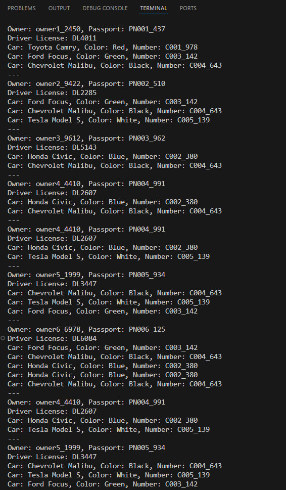
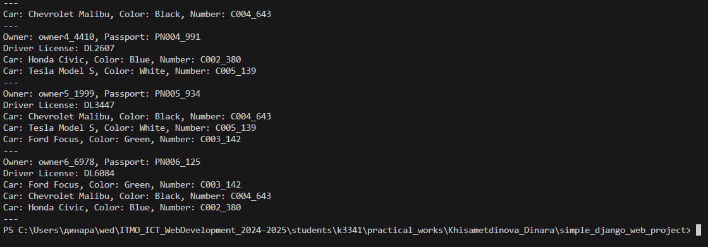

Django Web framework. Запросы и их выполнение.
Задача 1. Создание объектов
Напишите запрос на создание 6-7 новых автовладельцев и 5-6 автомобилей, каждому автовладельцу назначьте удостоверение и от 1 до 3 автомобилей. Задание можете выполнить либо в интерактивном режиме интерпретатора, либо в отдельном python-файле. Результатом должны стать запросы и отображение созданных объектов.
Если вы добавляете автомобили владельцу через метод .add(), не забудьте заполнить также ассоциативную сущность “владение”
Решение
После тестирования работы в Django shell, было решено написать все запросы в формате скрипта для упрощения отладки и проверки решения.
import os
import sys
import django
import random
from datetime import datetime, timedelta
BASE_DIR = os.path.dirname(os.path.dirname(os.path.abspath(__file__)))
sys.path.append(BASE_DIR)
os.environ.setdefault('DJANGO_SETTINGS_MODULE', 'simple_django_web_project.settings')
django.setup()
from project_first_app.models import CarOwner, DriverLicense, Car, CarOwnership
def generate_data():
owners_data = [
{'username': f'owner1_{random.randint(1000, 9999)}', 'passport_number': f'PN001_{random.randint(100, 999)}', 'home_address': 'Hollywood', 'nationality': 'CountryX'},
{'username': f'owner2_{random.randint(1000, 9999)}', 'passport_number': f'PN002_{random.randint(100, 999)}', 'home_address': 'Beverly Hills', 'nationality': 'CountryY'},
{'username': f'owner3_{random.randint(1000, 9999)}', 'passport_number': f'PN003_{random.randint(100, 999)}', 'home_address': 'New York', 'nationality': 'CountryZ'},
{'username': f'owner4_{random.randint(1000, 9999)}', 'passport_number': f'PN004_{random.randint(100, 999)}', 'home_address': 'Los Angeles', 'nationality': 'CountryX'},
{'username': f'owner5_{random.randint(1000, 9999)}', 'passport_number': f'PN005_{random.randint(100, 999)}', 'home_address': 'Chicago', 'nationality': 'CountryY'},
{'username': f'owner6_{random.randint(1000, 9999)}', 'passport_number': f'PN006_{random.randint(100, 999)}', 'home_address': 'Houston', 'nationality': 'CountryZ'}
]
owners = []
for owner_data in owners_data:
owner = CarOwner.objects.create_user(
username=owner_data['username'],
passport_number=owner_data['passport_number'],
home_address=owner_data['home_address'],
nationality=owner_data['nationality'],
birth_date = datetime.now() - timedelta(days=random.randint(10000, 20000))
)
owners.append(owner)
DriverLicense.objects.create(
owner=owner,
number=f'DL{random.randint(1000, 9999)}',
type_id='B',
issue_date=datetime.now() - timedelta(days=random.randint(1000, 3000))
)
cars_data = [
{'number': f'C001_{random.randint(100, 999)}', 'brand': 'Toyota', 'model': 'Camry', 'color': 'Red'},
{'number': f'C002_{random.randint(100, 999)}', 'brand': 'Honda', 'model': 'Civic', 'color': 'Blue'},
{'number': f'C003_{random.randint(100, 999)}', 'brand': 'Ford', 'model': 'Focus', 'color': 'Green'},
{'number': f'C004_{random.randint(100, 999)}', 'brand': 'Chevrolet', 'model': 'Malibu', 'color': 'Black'},
{'number': f'C005_{random.randint(100, 999)}', 'brand': 'Tesla', 'model': 'Model S', 'color': 'White'}
]
cars = []
for car_data in cars_data:
car = Car.objects.create(
number=car_data['number'],
brand=car_data['brand'],
model=car_data['model'],
color=car_data['color']
)
cars.append(car)
for owner in owners:
assigned_cars = random.sample(cars, random.randint(1, 3))
for car in assigned_cars:
CarOwnership.objects.create(
car=car,
owner=owner,
start_date=datetime.now() - timedelta(days=random.randint(500, 1000)),
end_date=None
)
for owner in owners:
print(f'Owner: {owner.username}, Passport: {owner.passport_number}')
driver_license = owner.driverlicense_set.first()
if driver_license:
print('Driver License:', driver_license.number)
else:
print('Driver License: Not assigned')
for ownership in CarOwnership.objects.filter(owner=owner):
print(f'Car: {ownership.car.brand} {ownership.car.model}, Color: {ownership.car.color}, Number: {ownership.car.number}')
print('---')
generate_data()
1. Настройка Django
BASE_DIR: Определяет корневую директорию проекта.sys.path.append(BASE_DIR): Добавляет корневую директорию в пути поиска модулей Python.os.environ.setdefault: Устанавливает переменную окружения для указания Django, где найти настройки проекта.django.setup(): Инициализирует Django, чтобы можно было использовать его модели и ORM.
2. Генерация данных для автовладельцев
owners_data: Список данных для автовладельцев. Генерирует случайные значения username и passport_number для уникальности. Остальные поля, такие как home_address и nationality, имеют фиксированные значения.
3. Сщздание автовладельцев
- Цикл проходит по списку
owners_data. CarOwner.objects.create_user: Создает записи автовладельцев в базе данных.birth_date: Вычисляется как случайная дата рождения, примерно 27–55 лет назад.
4. Создание водительских удостоверений
Для каждого автовладельца создается водительское удостоверение.
number: Случайный номер удостоверения.
issue_date: Устанавливается как случайная дата выдачи удостоверения в прошлом.
5. Генерация данных для автомобиля
cars_data: Список автомобилей с фиксированными марками, моделями и цветами. Номер автомобиля (number) содержит случайный суффикс для уникальности.
6. Создание автомобилей
- Цикл проходит по
cars_dataи создает записи автомобилей в базе данных.
7. Привязка автомобилей к владельцам
- random.sample(cars, random.randint(1, 3)): Назначает случайному владельцу от 1 до 3 автомобилей.
CarOwnership.objects.create: Создает запись о владении автомобилем.start_date: Устанавливается как случайная дата начала владения (примерно 1–3 года назад).end_date: Устанавливается как None (текущее владение).
8. Вывод
- Выводит информацию о каждом владельце:
- Имя и номер паспорта.
- Водительское удостоверение (номер).
- Список автомобилей, которыми он владеет (марка, модель, цвет, номер).

